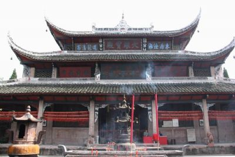

梁平区
原名梁山县，始设于西魏元钦
二年(553年)，历史悠久、底蕴深厚
，拥有梁山灯戏、梁平年画、梁山
竹帘等三项国家级非物质文化遗产。
在南宋后期，梁山区筑有著名
军事要塞赤牛城，英勇抗元。抗战
时期梁山机场作为飞虎队的主基地
闻名海内外。航天英雄杨利伟也
来自梁平机场。梁平区境内有西南
佛教禅宗祖庭--双桂堂，名优土特
产品有梁山竹帘、梁山柚誉满全国
梁平区，位于重庆市东北部，东
邻万州区，西连四川省大竹县，地
理位置优越，为出入四川、直达成
都的沪汉蓉快速通道的必经之地。 |
|  |
梁平双桂堂座落在三峡腹地——重庆市梁平县金带镇境内，是全国重点寺庙，全国重点文物保护单位，位于县城西南渝宜高速公路5公里处，距重庆主城区180公里，距万州68公里，是全国著名的明清文物旅游景点和佛教圣地。 |
|
滑石寨位于重庆市梁平县双桂旅游区内，距梁平县城9公里，与双桂堂遥遥相望。是古寨文化旅游景区。十八世纪末至十九世纪初，川东北白莲教义军在梁平县（史称梁山县）活动达７年之久，数万义军曾数度攻占梁平大部。当时清朝梁山知县方积亦在县内修建了２１７座寨堡，强令全县近４万人全部迁居山寨。历经３００年风雨，梁平县境内其余古寨皆已废芜 |
|
虎城东边的小峨眉山，背靠百里竹海，面对虎城猫儿寨。山上竹树葱茏，山下溪流淙淙，在群山之中尤显挺拔俊逸，清幽灵秀。有的说它山形秀丽如美女之眉；有的说每当夜幕降临，一轮弯月挂在山顶，远远望去，如山之秀眉。总之因其秀美，故称峨眉山。又因区别于川西峨眉山，便在前面冠一“小”字。 |
|